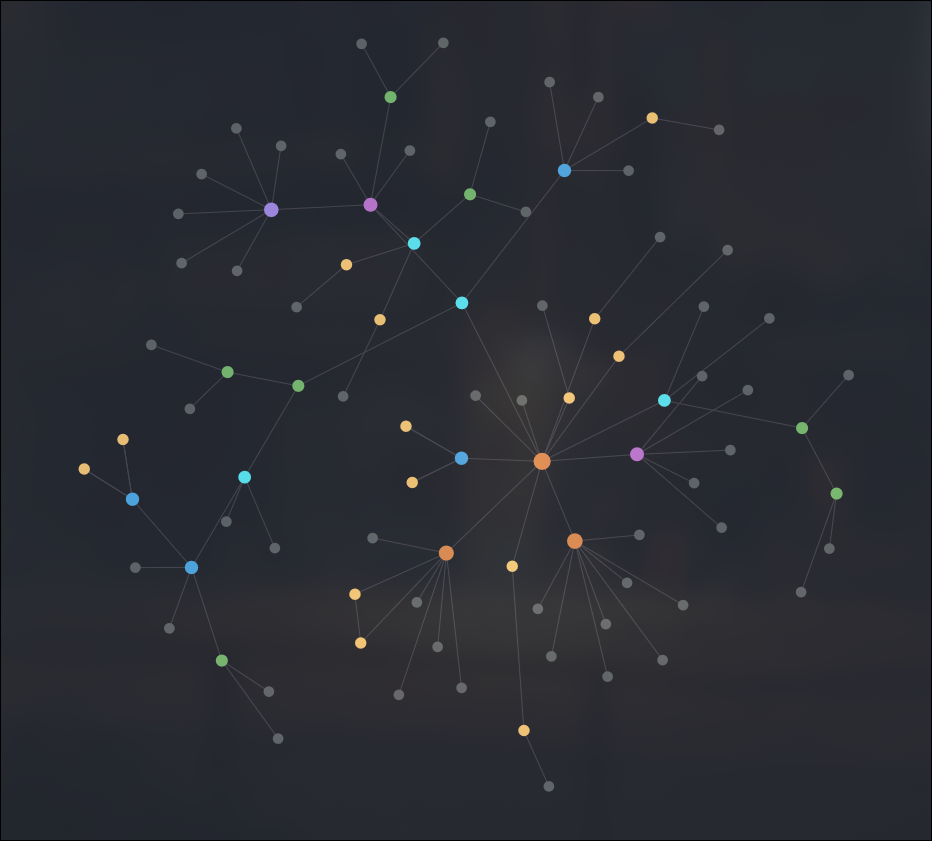

Zettelkasten Method
The Zettelkasten Method
This Zettelkasten method is growing in popularity for taking notes. Ever felt as though there's too much pieces of information but you don't know how to deal with it? This method solves exactly that problem and more. Think of it as forming a second brain, where you can jot down ideas and information whilst simultaneously being able to connect them together.
The official website describes in detail exactly what the Zettelkasten method is, providing use cases and benefits to this method. The part I wanted to highlighted in this is the following paragraph, where the author depicts how this concept would be explained to someone unfamiliar with it:
A Zettelkasten is a personal tool for thinking and writing. It has hypertextual features to make a web of thoughts possible. The difference to other systems is that you create a web of thoughts instead of notes of arbitrary size and form, and emphasize connection, not a collection.
This web of thoughts is exactly what makes it useful, it takes on the seemingly cluttered mess of information and is able to link the nodes together to create something meaningful and useful.
There are many personal knowledge management systems' (PKMS) out there that allow you to practice this method; the most common ones being Obsidian and Org Roam. After using Org Roam with Emacs for about a year or so, I realised how useful this method really is. A random idea can be jotted down and later connected to a bigger project or note system. The following picture below is a screenshot of a graph generated UI for all the nodes created in my Org Roam folder:
